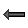
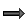

The free point : 
It is a point which can be freely moved on the figure.
The free point with integer coordinates : 
It is a point which can be freely moved on the figure but with coordinates remaining integer values.
You can restrain the position in the two axis.
It is a point which has been defined through intersection of two objects or a point image of another through a geometrical transform.
That kind of point can be moved but must remain on the object he is linked tot.
You can link a point to a line, ray, segment, segment, circle, polygon, broken line, circle arc or point locus.
A free point can be turned in linked-point through tool  .
.
A linked point can be turned in a free point through tool  .
.
The point through two vectors sum : 
C'est un point qui est l'image d'un autre par une translation dont le vecteur est la somme de deux vecteurs.
The point through vector multiplication by a number : 
This points is image of another point through a translation vector of which is the multiplication of a vector and a number.
The coordinate defined point : 
It is a point defined through it's coordinates in a frame.
The point inside a polygon or a circle : 
This kind of point is created by clicking inside a polygon or a circle.
This point can be captured with the mouse through the tool but it will stay inside the polygon.
This kind of point may be turned into a free point through tool .
A free point can be turned into a point inside a polygon through menu item Modify - Link creation - Between point and the inside of a polygon.
A line ca be defined through two points, as parallel, perpendicular, angle-bisector, perpendicular-bisector, horizontal line, vertical line, defined through point and slope, defined by a line equation or a line of linear regression.
You can also create the image of a line trough geometrical transformations (inversion excepted).
Un segment est créé en désignant ses deux extrémités.
On peut aussi créer l'image d'un segment par une transformation (excepté l'inversion).
A segment is created by clicking on two points.
You can also create the image of a segment trough geometrical transformations (inversion excepted).
A circle is created trough it's center and a point or through it's center and radius.
You can also create the image of a circle trough geometrical transformations (inversion excepted).
A circle is created trough it's origin and a point.
You can also create the image of a ray trough geometrical transformations (inversion excepted).
A vector is created through it's starting and ending points.
A circle arc is created :
A polygon is created by clicking on each vertex. Click on the red buttton STOP when the last vertex has been specified (or click again on the first vertex).
You can also create the image of a polygon trough geometrical transformations (inversion excepted).
A broken line is created by clicking on each vertex. Right click when the last vertex has been specified.
You can also create the image of a broken line trough geometrical transformations (inversion excepted).
You can create :

A segment mark must be associated with a segment.
You simply click on the segment.
The angle mark is created in the current color and line-style.
A text display is able to contain references to calculus or variables previously defined.
It is also able to display greek or special characters.
A text display can be free (  ) or linked to a point (
) or linked to a point ( ).
).
You can choose the horizontal alignment (

left, centered,
centered, 
right aligned) and the vertical alignment ( top,
top,  centered,
centered,  bottom)
bottom)
For the future characters to be in italic, enter the sequence #I.
For the future characters to be bold, enter the sequence #G.
For the future characters to be underlined, enter the sequence #U.
To return to the normal font enter the sequence #N.
To write chaine in exponent use #H(chaine).
To write chaine in index use #H(chaine).
You can insert LaTeX code inside a text display by surrounding the LaTeX code between two characters $.
Buttons on top of the dialog box insert the most common formulas.
A free text display can be linked to a point with tool  .
.
A text display linked to a pointed can be freed with tool  .
.
Since version 6.0, you can specify the angle of the display. This angle is relative to the horizontal and must be set in the figure angle unity.
The rotation is relative to the anchor point of the display.
Allows you to display a calculated or measured value on the figure.
A value display can be free ( ) or linked to a point (
) or linked to a point ( ).
).
You can specify the number of digits.
You can also specify :
a starting string that will be displayed before the value.
an-ending string that will be displayed after the value.
You can choose the horizontal alignment (left, centered, right aligned) and the vertical alignment (top, centered, bottom).
A free value display can be linked to a point with tool .
A value display linked to a pointed can be freed with tool .Since version 6.0, you can specify the angle of the display. This angle is relative to the horizontal and must be set in the figure angle unity.
The rotation is relative to the anchor point of the display.
Allows you to display LaTeX code on the figure.
A LaTeX display can be free ( ) our linked to a point (
) our linked to a point ( ).
).
You can choose the horizontal alignment (left, centered, right aligned) and the vertical alignment (top, centered, bottom)
The LaTeX code may contain dynamic references to the value of a variable or a calculus.
The LaTeX creation dialog box contains special icons for inserting the most popular LaTex sequences.
Buttons on top of the dialog box insert the most common formulas.
A free LaTeX display can be linked to a point with tool .
A LaTeX display linked to a pointed can be freed with tool .
Since version 6.0, you can specify the angle of the display. This angle is relative to the horizontal and must be set in the figure angle unity.
The rotation is relative to the anchor point of the display.
For example, you create a first LaTeX display with this LaTeX code : \srqt{2}.
You use the protocol tool  to give to this LaTeX display this tag : lat1
to give to this LaTeX display this tag : lat1
Then you create another LaTeX display with this LaTeX code : \Lat{lat1} + 3.
The result will be the same as if the LaTeX code of the second LaTeX display was : \sqrt{2} + 3
Allows you to display a text editor for the formula of a calculation or a function (real or complex).
You click first at the spot the editor will be located to.
Then a dialog box pops up.
You can choose the calculation or the function associated with the editor, the size of the editor an a starting string to be displayed in front of the editor.
If the starting string is empty, the name of the calculation or the function will be displayed followed by the signe = (for instance if the calculation is a fonction of the x variable, f(x) = will be displayed in front of the text editor).
If the Latex display of the formula checkbox is checked, the formula entered in the editor will be displayed in a natural form on the right size of the editor (LaTeX style).
It is drawn by linking the positions of a point through segments.
The positions can be generated :
 .
. .
.You can specify :
It is drawn by tracing the positions of a point.
The positions can be generated :
You can specify the number of points calculated.
A surface is drawn by filling a part of the figure.
 : Creation of a surface delimited by a polygon, a circle, a circle arc or a point locus (closed).
: Creation of a surface delimited by a polygon, a circle, a circle arc or a point locus (closed).

 : Creation of a surface delimited by a point locus and two points.
: Creation of a surface delimited by a point locus and two points.
 : Creation of a surface delimited by a point locus and a line.
: Creation of a surface delimited by a point locus and a line.
The surface is drawn in the active color and filling style.
It is created by clicking on a line an on a point belonging to the half-plan.
The half-plan is drawn in the active color and filling style.
The graph of real u(n+1)=f[u(n)] recurrent sequence : 
It is drawn in the active color and line-style.
It is the traditional web-graph of a real sequence type of u(n+1)=f (u(n)] where f is a function.
You can link the points to the x-axis or not.
The graph of complex u(n+1)=f[u(n)]l recurrent sequence :
It is drawn in the active color and line-style.
It is the graph of a real sequence type of u(n+1)=f (u(n)] where f is a function.
Each complex term is represented by a point and linked to the next point trough a segment.
The points are drawn in the active color, active point-style and active line-style.
Allows you to display in the figure an image located in a file.
It can be free ( ) or linked to a file (
) or linked to a file ( ).
).
You can choose the horizontal alignment (left, centered, right aligned) and the vertical alignment (top, centered, bottom).
Since version 6.0, you can specify the angle of the display. This angle is relative to the horizontal and must be set in the figure angle unity.
The rotation is relative to the anchor point of the display.
The object locus is a set of traces of an object.
It can be generated through the positions of a linked point ( ) or through the values of a variable (
) or through the values of a variable ( ).
).
The number N of object traces is limited to 100000. This number can be dynamically defined.
If the object locus is defined trough a linked point :
The software simulate N positions of the linked point on the object it is linked to. For each position, a trace of the object is drawn.
If the object locus is defined trough a variable :
The software simulate N values of the variable from the mini to the maxi value. For each value, a trace of the object is drawn.
To designate a n object locus, simply clic on one of the traces.
To be noticed :
To change the color of an object locus, use the palette tool ( ).
).
An object locus doesn't own a line-style. The line style in which it is drawn is the line style of the object generating the traces.
You can create locus of locus of objects (and so on) but the total number of traces must not exceed 100000.
Use icon  at the bottom of the left toolbar.
at the bottom of the left toolbar.
In a few cases, on object can be hidden by objects defined afterwards.
You can then create a duplicate of this object which function is to redraw the object.
Only one duplicate can be created for an object in a figure.
It is an object playing exactly the same role as an another object previously defined.
This kind of object is particularly useful for iterative and recursive constructions appeared in 4.8 version of MathGraph32.
I is possible to create a clone of the following objects : point, line, half line, segment and circle.